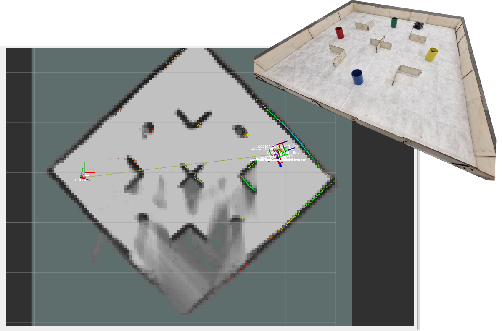
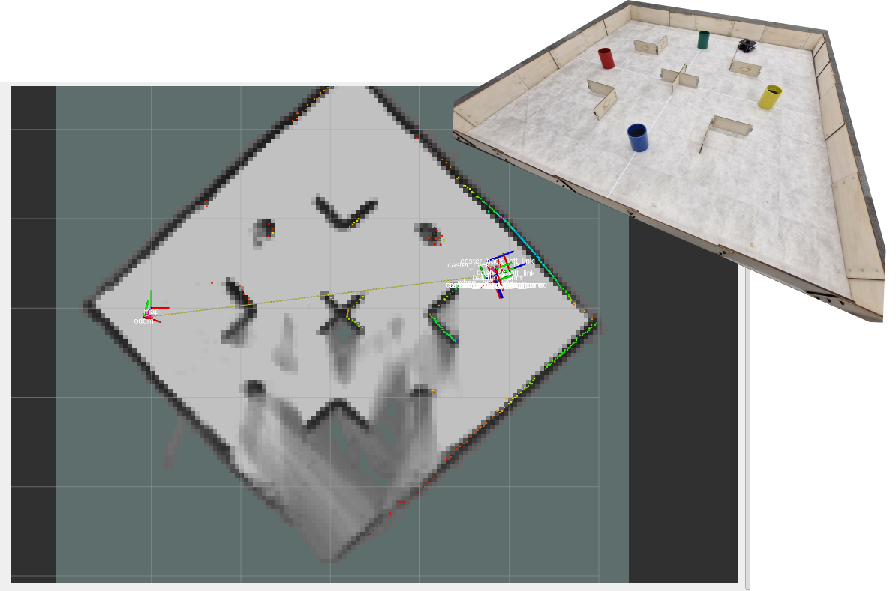

Waffle (& ROS) Basics¶
Having completed the steps on the previous page, your robot and laptop should now be paired, and ROS should be up and running (on the robot). Now, you're ready to bring the robot to life!
On this page are a series of exercises for you to work through, to see how the robots work. We'll also talk through some core ROS concepts and use some key ROS tools, in case you haven't had a chance to explore these in simulation yet.
Quick Links¶
- Exercise 1: Making the Robot Move
- Exercise 2: Seeing the Sensors in Action
- Exercise 3: Visualising the ROS Network
- Exercise 4: Exploring ROS Topics and Interfaces
- Exercise 5: A Python Velocity Control Node
- Exercise 6: Using SLAM to create a map of the environment
Manual Control¶
Exercise 1: Making the Robot Move¶
There's a very useful ready-made ROS application called teleop_keyboard (from the turtlebot3_teleop package) that we will use to drive a Waffle around. This node works in exactly the same way in both simulation and in the real-world!
-
You should already have two terminal instances active:
- TERMINAL 1: The robot terminal with the "bringup" processes running (Launching ROS, Step 3)
- TERMINAL 2: The laptop terminal with the
rmw_zenohdnode running (Launching ROS, Step 4)
-
Open up a new terminal instance on the laptop either by using the Ctrl+Alt+T keyboard shortcut, or by clicking the Terminal App icon, we'll refer to this as TERMINAL 3. In this terminal enter the following
ros2 runcommand to fire up theteleop_keyboardnode: -
Follow the instructions provided in the terminal to drive the robot around using specific buttons on the keyboard:

Warning
Take care to avoid any obstacles or other people in the lab as you do this!
-
Once you've spent a bit of time on this, close the application down by entering Ctrl+C in TERMINAL 3.
Packages and Nodes¶
ROS applications are organised into packages. Packages are basically folders containing scripts, configurations and launch files (ways to launch those scripts and configurations).
Scripts tell the robot what to do and how to act. In ROS, these scripts are called nodes. ROS Nodes are executable programs that perform specific robot tasks and operations. These are typically written in C++ or Python, but it's possible to write ROS Nodes using other programming languages too.
There are two key ways to launch ROS applications:
ros2 launchros2 run
Recall that we just used the ros2 run command in Exercise 1 to launch the teleop_keyboard node. This command has the following structure:
Part [1] specifies the name of the ROS package containing the functionality that we want to execute. Part [2] is used to specify a single script within that package that we want to execute. We therefore use ros2 run commands to launch single executables (aka Nodes) onto the ROS network (in Exercise 1 for example, we launched the teleop_keyboard node).
The ros2 launch command has a similar structure:
Here, Part [1] is the same as the ros2 run command, but Part [2] is slightly different: {[2] Launch file}. In this case, Part [2] is a file within that package that specifies any number of Nodes that we want to launch onto the ROS network. We can therefore launch multiple nodes at the same time from a single launch file.
Sensors & Visualisation Tools¶
Our Waffles have some pretty sophisticated sensors on them, allowing them to "see" the world around them. Let's now see what our robot sees, using some handy ROS tools.
Exercise 2: Seeing the Sensors in Action¶
-
There shouldn't be anything running in TERMINAL 3 now, after you closed down the
teleop_keyboardnode (using Ctrl+C) at the end of the previous exercise. Return to this terminal and enter the following command:This will launch an application called RViz, which is a handy tool that allows us to visualise the data from all the sensors on-board our robots. When RViz opens, you should see something similar to the following:

Click on the checkbox next to "Camera" in the "Displays" list to enable camera subscription. A live feed from the robot's camera should then be displayed in the Camera panel in the bottom left.
-
In the main RViz panel you should see a digital model of the robot, surrounded by lots of green dots. This is a representation of the laser displacement data coming from the LiDAR sensor (the black device on the top of the robot). The LiDAR sensor spins continuously, sending out laser pulses into the environment as it does so. When a pulse hits an object it is reflected back to the sensor, and the time it takes for this to happen is used to calculate how far away the object is.
The LiDAR sensor spins and performs this process continuously, so a full 360° scan of the environment can be generated. This data is therefore really useful for things like obstacle avoidance and mapping.
-
Place your hand in front of the robot and see if the position of the green dots changes to match your hand's location. Move your hand up and down and consider at what height the LiDAR sensor is able to detect it.
-
Then, move your hand closer and further away and watch how the green dots move to match this.
-
Open up a new terminal instance (TERMINAL 4) and launch the
teleop_keyboardnode as you did in Exercise 1. Watch how the data in the RViz screen changes as you drive the robot around a bit.
Exercise 3: Visualising the ROS Network¶
Using ros2 run and ros2 launch, as we have done so far, it's easy to end up with a lot of different processes or ROS Nodes running on the network, some of which we will interact with, but others may just be running in the background. It is often useful to know exactly what is running on the ROS network, and there are a few ways to do this.
-
Open up a new terminal instance now (TERMINAL 5) and from here use the
ros2 nodecommand to list the nodes that are currently running:At a minimum, you should be presented with the following list:
-
We can visualise the connections between the active nodes by using a ROS node called
rqt_graph. In the same terminal, launch this as follows:A window should then open:
-
From here, we then want to load the Node Graph plugin. From the top menu select
Plugins>Introspection>Node Graph. -
In the window that opens, select
Nodes/Topics (active)from the dropdown menu in the top left.What you should then see is a map of all the nodes in the list from above (as ovals), and arrows to illustrate the flow of information between them. This is a visual representation of the ROS network!

Items that have a rectangular border are ROS Topics. ROS Topics are essentially communication channels, and ROS Nodes can read (subscribe) or write (publish) to these topics to access sensor data, pass information around the network and make things happen.
If the
teleop_keyboardNode is still active (in TERMINAL 4) then the graph should show us that this node is publishing messages to a topic called/cmd_vel, which in turn is being subscribed to byturtlebot3_node.
This node runs on the robot and controls its velocity. We send instructions to this (by publishing to the
/cmd_veltopic) to actually make the robot move.
A ROS Robot could have hundreds of individual nodes running simultaneously to carry out all its necessary operations and actions. Each node runs independently, but uses ROS communication methods to communicate and share data with the other nodes on the ROS Network.
Publishers and Subscribers: A ROS Communication Method¶
ROS Topics are therefore key to making things happen on a robot. Nodes can publish (write) and/or subscribe to (read) ROS Topics in order to share data around the ROS network. Data is published to topics via message-type interfaces.
Let's have a look at this in a bit more detail...
Exercise 4: Exploring ROS Topics and Interfaces¶
Much like the ros2 node list command, we can use ros2 topic list to list all the topics that are currently active on the ROS network.
-
Close down the RQT Graph window if you haven't done so already. This will release TERMINAL 5 so that we can enter commands in it again. Return to this terminal window and enter the following:
A new list of items should be printed to the terminal now. See if you can spot the
/cmd_velitem in the list.As we learnt above, this topic is used to control the velocity of the robot ('command velocity').
-
Let's find out more about this using the
ros2 topic infocommand.This should provide an output similar to the following:
This tells us that the type of data being communicated on the
/cmd_veltopic is called:geometry_msgs/msg/TwistStamped.The interface description has three parts:
geometry_msgs: The name of the ROS package that this interface belongs to.msg: The type of interface. In this case message, but there are other types too.TwistStamped: The name of the message interface.
We have just learnt then, that if we want to make the robot move we need to publish
TwistStampedmessages to the/cmd_veltopic. -
We can use the
ros2 interfacecommand to find out more about theTwistStampedmessage:From this, we should obtain the following:
std_msgs/Header header builtin_interfaces/Time stamp int32 sec uint32 nanosec string frame_id Twist twist Vector3 linear float64 x float64 y float64 z Vector3 angular float64 x float64 y float64 zHere we have a list of fields, subfields and data types. The interface has two base fields (indicated by the lines that are not indented):
# Field Name Field Type 1 headerstd_msgs/Header2 twistTwistOf the above, we're most interested in Field 2, which contains a further two subfields:
# Field Name Field Type 1 linearVector32 angularVector3Each of these contains 3 further subfields:
x,yandz:# Field Name Data Type 1 xfloat642 yfloat643 zfloat64Let's find out what this all means...
Velocity Control¶
The motion of any mobile robot can be defined in terms of its three principal axes: X, Y and Z. In the context of our TurtleBot3 Waffle, these axes (and the motion about them) are defined as follows:

In theory then, a robot can move linearly or angularly about any of these three axes, as shown by the arrows in the figure. That's six Degrees of Freedom (DOFs) in total, achieved based on a robot's design and the actuators it is equipped with. Take a look back at the ros2 interface show output above. Hopefully it's a bit clearer now that the twist subfield of the TwistStamped interface is formatted to give a ROS Programmer the ability to ask a robot to move in any one of its six DOFs.
Vector3 linear
float64 x <-- Forwards (or Backwards)
float64 y <-- Left (or Right)
float64 z <-- Up (or Down)
Vector3 angular
float64 x <-- "Roll"
float64 y <-- "Pitch"
float64 z <-- "Yaw"
Our TurtleBot3 robot only has two motors, so it doesn't actually have six DOFs! The two motors can be controlled independently, which gives it what is called a "differential drive" configuration, but this still only allows it to move with two degrees of freedom in total, as illustrated below.

It can therefore only move linearly in the x-axis (Forwards/Backwards) and angularly in the z-axis (Yaw).
Exercise 5: A Python Velocity Control Node¶
Important
Before you start this, make sure you have nothing running in TERMINALS 3, 4 & 5 (enter Ctrl+C in each of these terminals to stop any processes that may be running there).
As we've seen, making a robot move with ROS is simply a case of publishing the right data (geometry_msgs/msg/TwistStamped) to the right ROS Topic (/cmd_vel). Earlier we used the teleop_keyboard node to drive the robot around, a bit like a remote control car. In the background here all that was really happening was that the node was converting our keyboard button presses into velocity commands and publishing these to the /cmd_vel topic.
In reality, robots need to be able to navigate complex environments autonomously, which is quite a difficult task, and requires us to build bespoke applications. We can build these applications using Python, and we'll look at the core concepts behind this now by building a simple node that will allow us to make our robot a bit more "autonomous". What we will do here forms the basis of the more complex applications that you will learn about in the lab course!
-
Above, we talked about how ROS Nodes should be contained within packages, so let's create one now using a helper script that we've already put together. (This is covered in more detail in the ROS course, but for the purposes of this exercise let's just go ahead and run the script without worrying too much about it!)
In TERMINAL 3, navigate to the ROS2 Workspace on the laptop:
-
From here, use
gitto clone our "ROS 2 Package Template" from GitHub: -
This package template contains a script called
init_pkg.sh, which can be called to turn the template into a proper ROS 2 package. Run the script as follows, which will convert the template into a ROS 2 package calledwaffle_demo: -
Navigate into this new package directory (using
cd): -
This package contains a subdirectory called
scripts, and within this there are two basic nodes to get us started: -
Let's open up our package now in Visual Studio Code (VS Code).
Note
Don't forget to include the
.at the end there, it's important!! -
Next, in the VS Code file explorer, open up the
scriptsdirectory, find thebasic_velocity_control.pyfile and click it to open it up in the editor.This is a (fairly) basic ROS 2 Python Node that will control the velocity of the robot. Let's talk through it:
-
First, we have some imports:
rclpyis the ROS client library for Python. We need this so that our Python node can interact with ROS.- We know from earlier that in order to make a robot move we need to publish messages to the
/cmd_veltopic, and that this topic uses a data structure (or Interface) calledgeometry_msgs/msg/TwistStamped. This is how we import the interface into our Python node so that we can create velocity commands for our robot (which we'll get to shortly...) - We'll use this to control timing in our node.
Click on the icons above to reveal more information about each line of the code.
-
Next, we declare some variables that we can use and adapt during the main execution of our code:
- Inside the
whileloop (explained shortly) we define two different operational states for the robot, and we can control which one is active by changing this value from1to2(and visa-versa). -
We're instantiating a
TwistStampedInterface message here and calling itvel. We'll assign velocity values to this in thewhileloop later on.Recall that a
TwistStampedmessage contains six different components that we can assign values to. Which two are relevant to our robot?
- Inside the
-
Next we configure some important ROS-related things:
rclpy.init(args=None) # (1)! node = rclpy.create_node("basic_velocity_control") # (2)! vel_pub = node.create_publisher(TwistStamped, "cmd_vel", 10) # (3)!- Initialise
rclpyand all the ROS communications that are necessary for our node. - Initialise this Python script as an actual ROS node, providing a name for it to be registered on the ROS network with ("basic_velocity_control" in this case).
- Here we're setting up a publisher to the
/cmd_veltopic so that the node can send velocity commands to the robot (usingTwistStampeddata).
- Initialise
-
After this, we're defining another variable:
- What time is it right now? This tells us the current "ROS Time" (in nanoseconds), which will be useful to compare against in the while loop.
-
Now, we enter into a
whileloop, which is where our code will spend the majority of its time once it's up and running:while rclpy.ok(): # (1)! time_now = node.get_clock().now().nanoseconds # (2)! elapsed_time = (time_now - timestamp) * 1e-9 # (3)! ...- This returns
Trueas long as the node is alive, so all the code inside thewhileloop will continue to execute as long as this is the case. - What time is it now? Check the time at the start of each iteration of the
whileloop, and assign this to a variable calledtime_now. - Determine how much time has elapsed (in seconds) since the
timestampwas last updated.
-
An
ifstatement now controls the state of operation for our robot.-
In state
1we set velocities that will make the robot move forwards (linear X velocity only) for a certain amount of time and then stop. How long will the robot move forwards for, and at what velocity?if state == 1: if elapsed_time < 2: # (1)! vel.twist.linear.x = 0.05 # (2)! vel.twist.angular.z = 0.0 else: # (3)! vel.twist.linear.x = 0.0 # (4)! vel.twist.angular.z = 0.0 state = 2 # (5)! timestamp = node.get_clock().now().nanoseconds # (6)!- If the elapsed time is less than 2 seconds...
- Set a linear velocity so that the robot will move forwards.
- If the elapsed time has exceeded 2 seconds...
- Set our robot's velocities to
0.0to make it stop. - In the next loop iteration, go into state 2 instead.
- Reset the timestamp to start counting up again.
-
In state
2we set velocities that will make the robot turn on the spot (angular Z velocity only) for a certain amount of time and then stop. How long will it do this for, and at what velocity?elif state == 2: if elapsed_time < 4: # (1)! vel.twist.linear.x = 0.0 vel.twist.angular.z = 0.2 # (2)! else: # (3)! vel.twist.linear.x = 0.0 # (4)! vel.twist.angular.z = 0.0 state = 1 # (5)! timestamp = node.get_clock().now().nanoseconds # (6)!- While the elapsed time is less than 4 seconds...
- Apply an angular velocity to the robot to make it turn on the spot.
- Once the elapsed time has exceeded 4 seconds...
- Set the robot's velocities back to
0.0to make it stop. - In the next loop iteration, go back into state 1 again (moving forwards).
- Reset the timestamp to start counting up once more.
-
-
And after the
ifstatement:node.get_logger().info( # (1)! f"\n[State = {state}] Publishing velocities:\n" f" - linear.x: {vel.twist.linear.x:.2f} [m/s]\n" f" - angular.z: {vel.twist.angular.z:.2f} [rad/s].", throttle_duration_sec=1, ) vel_pub.publish(vel) # (2)!- This (and the following 5 lines) will print a message to the terminal, to provide us with regular updates on what state the node is currently in and what velocities have been set (in the
ifstatement above). -
This line is crucial: this operation actual publishes the velocity commands to the
/cmd_veltopic, to make the robot actual act on our instructions.Regardless of what happens in the
ifstates above, we always publish a velocity command to the/cmd_veltopic here (every loop iteration).
- This (and the following 5 lines) will print a message to the terminal, to provide us with regular updates on what state the node is currently in and what velocities have been set (in the
- This returns
-
-
We're now ready to build our package so that we can run it. We use a tool called "Colcon" to do this, but this MUST be run from the root of the ROS 2 Workspace (i.e.:
~/ros2_ws/), so let's navigate there now usingcd. Head back to TERMINAL 3 and run the following:Then, use the
colcon buildcommand to build your package:And finally, "re-source" the environment:
-
Now we can run the code.
Note
Make sure the robot is on the floor and has enough room to roam around before you do this!
Observe what the robot does. When you've seen enough, enter Ctrl+C to stop the node.
-
Now it's time to adapt the code:
The aim here is to make the robot follow a square motion path. What you may have observed when you actually ran the code is that the robot doesn't actually do that! We're using a time-based approach to make the robot switch between two different states continuously:
- Moving forwards
- Turning on the spot
Have a look at the code to work out how much time the robot will currently spend in each state.
We want the robot to follow a 0.5m x 0.5m square motion path. In order to properly achieve this you'll need to adjust the timings, or the robot's velocity, or both. Edit the code so that the robot actually follows a 0.5m x 0.5m square motion path!
SLAM¶
Simultaneous Localisation and Mapping (SLAM) is a sophisticated tool that is built into ROS. Using data from the robot's LiDAR sensor, plus knowledge of how far the robot has moved1 a robot is able to create a map of its environment and keep track of its location within that environment at the same time. In the exercise that follows you'll see how easy it is to implement SLAM with the Waffle.
Exercise 6: Using SLAM to create a map of the environment¶
-
In TERMINAL 3 enter the following command to launch all the necessary SLAM nodes:
Tip
On the laptop, this command is also available as an alias:
tb3_slam!This will launch a new RViz instance, showing a top-down view of the environment, and dots of various colours representing the real-time LiDAR data.

SLAM will already have begun processing this data to start building a map of the boundaries that are currently visible to the Waffle based on its location in the environment.
-
Return to TERMINAL 4 now and launch the
teleop_keyboardnode. Start to drive the robot around slowly and carefully to build up a complete map of the area.Tip
It's best to do this slowly and perform multiple circuits of the area to build up a more accurate map.
 


-
Once you're happy that your robot has built up a good map of its environment, you can save this map using the
map_saver_clinode from a package callednav2_map_server:-
First, create a new directory within your ROS package on the laptop. Return to TERMINAL 5 and navigate to the root of the
waffle_demopackage that you created earlier: -
Create a directory in here called
maps: -
Navigate into this directory:
-
Then, use
ros2 runto run themap_saver_clinode and save a copy of your robot's map:Replacing
MAP_NAMEwith an appropriate name for your map. This will create two files:- a
MAP_NAME.pgm - a
MAP_NAME.yamlfile
...both of which contain data related to the map that you have just created.
- a
-
The
.pgmfile can be opened using an application calledeogon the laptop:
-
-
Return to TERMINAL 3 and close down SLAM by pressing Ctrl+C. The process should stop and RViz should close down.
-
Close down the
teleop_keyboardnode in TERMINAL 4 as well, if that's still running.
Next Steps¶
Having mastered the basics, you should ensure you review some Essential Considerations before you go much further on this course; these will highlight some challenges students commonly face when working with the robots Indeed, being aware of these early on can make a huge difference and save a lot of head scratching in the lab!
... and when you're all done with your robot at the end of each lab session, make sure you power it off properly.
-
You'll learn much more about "Robot Odometry" in the lab course. ↩